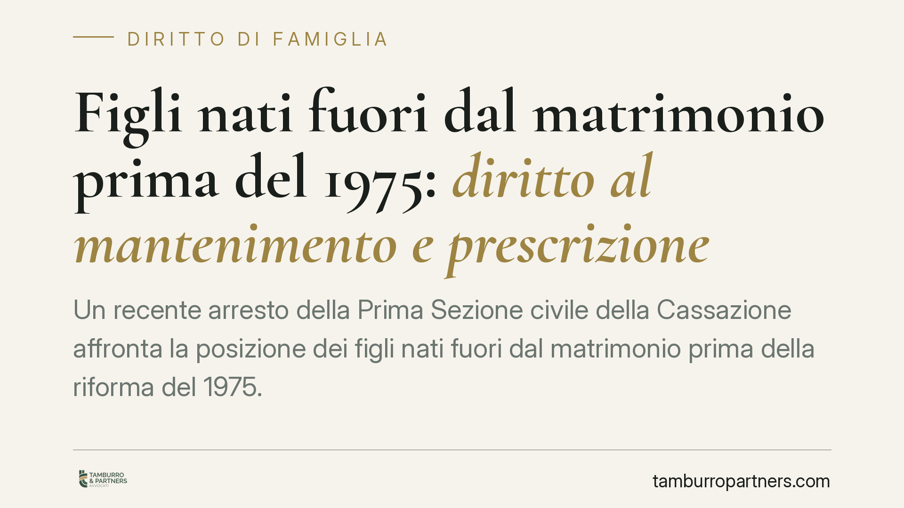

Figli nati fuori dal matrimonio prima del 1975: diritto al mantenimento e prescrizione
Un recente arresto della Prima Sezione civile della Cassazione affronta la posizione dei figli nati fuori dal matrimonio prima della riforma del 1975. Il tema tocca due questioni delicate: il diritto al mantenimento verso entrambi i genitori e il momento da cui decorre la prescrizione delle pretese economiche. Il silenzio del genitore, chiarisce la Corte, non equivale a rinuncia.

Il caso
La vicenda riguarda un figlio nato dopo l'entrata in vigore della Costituzione (1948) ma prima della riforma del diritto di famiglia del 1975. All'epoca l'ordinamento distingueva tra figli legittimi, naturali e cosiddetti "adulterini", con tutele diseguali. La questione portata all'attenzione della Corte riguarda la possibilità, per chi non è stato riconosciuto da vivo il genitore, di far valere pretese economiche nei confronti degli eredi di quest'ultimo.
Una premessa necessaria: le categorie storiche (legittimi, naturali, adulterini) sono oggi abolite. La L. 219/2012 e il D.Lgs. 154/2013 hanno sancito l'unicità dello stato di figlio. I termini di quell'epoca vanno quindi letti nel loro contesto storico, non come categorie ancora operanti.
Inquadramento normativo
Il riferimento costituzionale è l'art. 30 Cost., che impone ai genitori il dovere di mantenere, istruire ed educare i figli "anche se nati fuori dal matrimonio". La portata di questa norma sul piano dei rapporti pregressi va maneggiata con prudenza: è un principio cardine, ma la sua traduzione in pretese economiche concrete passa pur sempre per gli strumenti del codice civile.
Sul piano codicistico occorre tenere distinte due vie.
La prima è l'azione di dichiarazione giudiziale di paternità o maternità (art. 269 c.c.): serve ad accertare in giudizio il rapporto di filiazione quando manca il riconoscimento. È l'azione "di stato", che costituisce formalmente il legame giuridico tra figlio e genitore.
La seconda è l'azione prevista dall'art. 279 c.c., che consente al figlio di ottenere il mantenimento, l'istruzione e l'educazione nei casi in cui l'azione di stato non possa essere proposta. Si tratta quindi di una tutela residuale, economica, che prescinde dall'attribuzione dello status.
La differenza non è tecnicismo da addetti ai lavori: chi può accertare il rapporto di filiazione agisce ex art. 269 c.c. e, una volta ottenuto l'accertamento, può far valere le conseguenze patrimoniali; chi non può proporre quell'azione dispone, nei limiti di legge, della sola tutela dell'art. 279 c.c.
La prescrizione: una questione delicata
Il punto più sensibile riguarda la decorrenza della prescrizione delle pretese economiche. Secondo la ricostruzione accolta dalla Corte, quando la pretesa è legata all'accertamento del rapporto di filiazione, il termine non può iniziare a decorrere prima che quell'accertamento sia divenuto definitivo. Il fondamento è l'art. 2935 c.c., per cui la prescrizione comincia dal giorno in cui il diritto può essere fatto valere.
Si tratta di un'impostazione che va presentata con cautela: l'interazione tra prescrizione dei crediti, rapporti successori e momento di accertamento dello status è materia complessa, e ogni caso va valutato nei suoi elementi concreti.
La Corte affronta anche il valore dell'inerzia. Il silenzio del genitore — o la mancata iniziativa — non equivale a rinuncia. La rinuncia a un diritto deve risultare da una manifestazione di volontà chiara: chi la eccepisce in giudizio ha l'onere di provarla. L'assenza di atti, da sola, non basta.
Implicazioni pratiche
Per chi ritiene di avere pretese nei confronti di un genitore defunto, e dunque dei suoi eredi, l'esito conferma che il decorso del tempo non chiude automaticamente ogni porta, soprattutto se l'accertamento del rapporto non era ancora intervenuto.
Per gli eredi convenuti, invece, l'eccezione di prescrizione va costruita con attenzione: non ci si può limitare a invocare il lungo tempo trascorso dalla nascita, perché la decorrenza può essere ancorata a un momento successivo. Allo stesso modo, invocare una presunta rinuncia impone di dimostrarla.
Cosa fare in concreto
- Se intendi far valere pretese come figlio: verifica anzitutto quale azione sia esperibile nel tuo caso, distinguendo tra dichiarazione giudiziale del rapporto (art. 269 c.c.) e tutela economica residuale (art. 279 c.c.).
- Ricostruisci la documentazione: atti, corrispondenza ed eventuali precedenti giudiziari sono decisivi per individuare il momento rilevante ai fini della prescrizione.
- Se sei erede convenuto: valuta con il legale la fondatezza dell'eccezione di prescrizione, individuando correttamente il *dies a quo*, e raccogli prove concrete di un'eventuale rinuncia.
- Non dare per acquisita alcuna soluzione automatica: la materia intreccia diritto di famiglia e diritto successorio; consigliamo una verifica tecnica prima di qualsiasi iniziativa.
- Agisci tempestivamente: anche quando il termine decorre da un momento successivo, ritardi ingiustificati possono complicare la prova e la gestione del contenzioso.
---
*Contributo informativo a cura di Tamburro & Partners — Avv. Giuseppe Tamburro. Non costituisce parere legale.*
Ogni famiglia ha il suo equilibrio.
Separazione, divorzio, affidamento, assegno: se vuoi un confronto riservato su una specifica situazione, scrivi allo studio. Ti rispondiamo entro un giorno lavorativo.